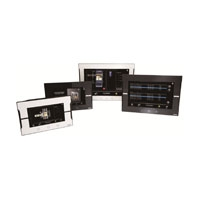
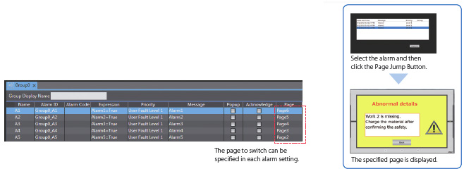
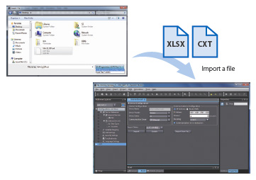
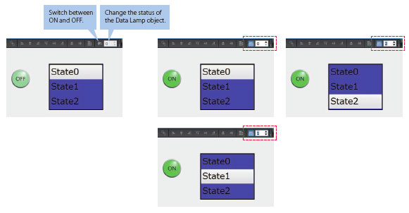

An HMI that is dynamic, intuitive and predictive makes industrial machines more attractive and competitive.
The Omron HMI enables faster, more efficient control and monitoring - and a more natural, proactive relationship between operator and machine. The design has been based on real applications and customer requirements, a future-proofed, scalable platform that will evolve with their ever-changing needs, allowing real time reaction to events. As part of the system family, the NA Series is fully aware of the total machine.
Building Automation
Industrial Automation
Power Automation & Safety


Bangladesh Distributor
NA Series
Programmable Terminal

The Omron Sysmac HMI enables faster, more efficient control and monitoring - and a more natural, proactive relationship between operator and machine. Wide screen models: 7, 9, 12 and 15 inches
about this Product Family
Related Contents
- Automation Systems
- Programmable Terminals
- Features
- Lineup
- Specifications
- Dimensions
- Catalog
last update: October 11, 2016
Sysmac - the family that matches every requirement
• Proactive operator/ machine relationship
• Design based on real applications and customer requirements
• Future-proof, scalable platform
• Allows quick reaction
Integrating your world
Sysmac Studio is the centrepiece of the Sysmac Platform, bringing together all areas of automation including: logic, motion, vision, safety and now visualisation. The NA series machine interface brings you a clear view in one integrated project.
ONE Tag Database
• Share NJ/NX Variables (Tags) in the machine interface application.
“Intelli sense” makes it FAST
• Flexible programming with variables including union and enumeration variables
• Define/use NA data structures in the machine interface application
ONE Learning, ONE Project
• Program your controller and safety systems
• Simultaneously program the NA Series as device in Sysmac Studio
• Program your whole machine in one project
• Work in a familiar way on all devices
Safe and secure
• Configure individual users with multi access levels
SIMPLE
• Clearly and quickly define the View
• Quickly change properties, animations, events and actions
• Powerful page editor to group objects
• Rotate, and resize - all with a simple click
BUT STILL FLEXIBLE
• Write your Visual Basic Script
• Extend the possibilities with Visual Basic
Test it in ONE
• Integrated testing through simulation of motion, logic and visualisation at the same time
• Build confidence before having a single piece of hardware
• Test your machine interface with the NJ/NX Control program via the Simulator in Sysmac Studio
Features for speed
• Structured programming (through One software)
• Network device insight
• Vision setup
• Machine Controller troubleshooting
Insight & security maximised ...
The NA series has full security and authentication features that keep your valuable assets secure at all times.
And if something unexpected does happen, in your machine you will be able to solve the problem quickly and prevent a reoccurrence.
Remote access
• You can view and operate the HMI installed at production sites from your tablet using Ethernet or WiFi.
• The access of remote devices can be managed and limited. This helps prevent accidental operation and information
leakage, while securing accessibility.
Increased security
The NA Series can be configured to specific staff, with multi access levels with password protection.
This ensures authorised people interact with the machine.
Protecting your assets
• Your project can be passwordprotected along with other applications (Control and Safety).
• Transferring data can be protected (disable overwrite or theft).
... downtime minimised
You can present a machine view that is understandable at a glance. The NA Series brings everything together through rich media including PDF, video, and data to provide an intuitive and proactive machine management tool.
Show your manual in a movie
Imagine actually showing how to perform certain procedures. With the NA Series you have a trained engineer at the operator’s side, 24x7.
Show PDFs
You can use whatever visual assets you already have to illustrate how to do things.
Check the controller
The troubleshooter allows you to monitor and release the NJ/NX/NY Controller errors/events as well as the user-defined errors/events.
Simple, but Flexible!
The NA Series gives the user the ability to design using IAGs (Intelligent Application Gadgets). IAGs simplify and accelerate the development process through structuring the project and enhancing reuse. From simple graphics to complex objects, you can make your own collections and share them between projects, like a Function Block.
Step 1: Machine Parts, the Visual
Using standard controls, or graphics from the machine parts collection, design your own IAG.
Add interface properties and methods to bring the object to life when reused.
Step 2: Extensible with Visual Basic
As well as many graphic IAGs, it is also possible to embed code within an IAG. The code can extend the possibilities of the gadget such as providing special device communication. Thanks to Visual Basic the standard functionality of the NA can be extended as required.
Step 3: Publish and Share
When the IAG is built and tested (using simulation) it can be published and the collection file distributed to be used again and again. Omron will release further IAG collections to extend the functionality of the NA Series.
A range of options that covers every need
(1) USB slave (Tool port)
(2) 2x USB
(3) 1 Serial *
(4) 2 Ethernet ports, one for factory one for office network
(5) SD Card slot
(6) 24V DC
* The serial port is for future expansion.
• High speed communications network
• Broad choice of connection possibilities
• USB cable detachable without changing the hardware
• Water and dust proof design
SHOW your machine
Greater visualization
Vector graphics
DXF files are supported to display CAD data. Even if the drawing is enlarged or reduced in size, it never loses quality.
Supported format: DXF
Indirect reference of text strings
A text string that is displayed on a label object (1 line) or a text box object (1 or more lines) can be switched by indirect reference. The machine operating status and alarm details can be easily displayed.

Tab control
A part of the screen can be used like a notepad.
Up to 64 tab pages for a Tab Control object can be created, and up to 10 Tab Control objects can be placed on a screen.
Change a tab page instead of a screen to monitor/change various data.
Usability improvement setting alarm columns, Alarm sort and filter
Alarms can be set easily, reducing time and effort required for creating alarm screens.

You can “sort” alarms by the preset item and “filter” by any keyword.
The error location can be quickly identified from a large number of alarms.
Scaling
Scaling can be set for Data Display/Data Edit objects and global variables.
Values of variables can be converted by specifying conversion expressions, which makes it easy to show data in the controller.
Broken-line graphs
Data of variables and multidimensional arrays in the controller can be displayed as broken-line graphs. Broken-line graphs can also be created from the data in the CSV files saved in the SD card inserted in the NJ/NX/NY Controller by using subroutines (Visual Basic). You can specify the display range of large array data, such as operation log, by setting the offset value.
OPERATE your machine
Comfortable to use
Supporting Asian languages
An Asian language - Japanese, simplified Chinese, traditional Chinese, or Korean - can be selected to use in the keypad of the NA Series.
The keypad language changes automatically when the language is changed in the language settings.
Local languages can be used to input the names of products when new recipes of the food packaging machine are added.
Executing a subroutine with multiple threads
Some subroutines require time due to repeated processing or waiting time.
Even such a subroutine can be executed during screen update, without affecting operability and visibility.
Page jump from user alarm
The page to switch can be specified in each alarm setting.
When an alarm occurs, you can check the troubleshooter screen by selecting the displayed alarm.

Custom keypads, Resizing object
You can change the keypad size, choose only the keys you need, and customize the keys to execute specified actions.
Create your own keypad suitable for your applications.
Check boxes, slider buttons, and radio buttons can now be resized. You can greatly improve the usability of your machine by enlarging these objects in size.
Dynamic max/min value
The maximum and minimum values can be dynamically changed by setting the variables in the corresponding fields of the data input object. Possible to restrict input according to the status of the device.
Specify page by number
By assigning any number to the page, you can easily switch pages from PLC.
The previously required subroutine is no longer needed for this operation. This feature is particularly helpful when connecting the CJ Series in which pages are frequently specified by number.*
* This function is also supported in the NJ/NX/NY Series.
Usability
Simple screen design for Debugging
Importing external device variables

External device variables can be imported from an XLSX or CXT file.
The CJ variable files and Excel files containing edited variables can be imported. Imported variables facilitate programming including external device settings.
Text editing
You can edit a label either directly on the Page Editor or in its properties. Editing in the object properties is recommended to edit the ON and OFF labels and change the font attributes at the same time.

Data input order
The Data input order can be set.
When numeric values are entered consecutively, the focus automatically moves to the next Data Edit object by touching the Enter key.
Input errors and input time can be minimized.
Changing type of button
The type of the buttons including Set and Momentary can be changed easily in the properties whenever you want, even during or after designing the button.
Button/Lamp Object
With one object, you can easily create a button that contains the lamp function.
Property localization (Japanese only)
The properties that were previously displayed in English only can now also be displayed in Japanese.
Usability improvement adding variables
When adding variables in the properties, they can be also added to the variable table at the same time.
This greatly saves your time and effort for adding variables to the variable table that was previously required each time.
Creating duplicate objects
Based on one object , you can create multiple copies with the same appearance and the same settings by incrementing the variable.
This makes screen creation faster and easier.
Usability improvement jumping to code editor
You can open the code editor (a page to edit subroutines) with just one click.
NA screen capture
The screens displayed on the NA Series can be captured and saved in the SD card inserted in the NA Series or the USB memory connected to the NA Series.
• When a screen of the NA Series is required to create a machine operation manual
• When the current screen is required to save as proof of a trouble
Supported format: PNG
Sysmac Studio printing
Project information including screens and properties can be printed from the Sysmac Studio.
This function is useful when you create machine manuals.
Usability
Simple screen design for Debugging
Cross references
The same GUI cross reference function as the NJ/NX/NY Controller can be used.
When the variable to search is clicked in the global variable table, a list of the locations where the variable is used is displayed in the Cross Reference Tab Page. You can access the object or subroutine where the variable is used by clicking the location, which makes screen design and debugging quicker and easier.
Search and Replace
You can search and replace text strings in all subroutines (Visual Basic), objects, and variables within a project.
It is quick and easy to edit and debug variable names and switch labels.
Watch Tab Page
The same GUI as the NJ/NX/NY Controller is used. Register the variable to monitor/change and then change its value on the Watch Tab Page to easily debug screens with the NA Simulator without the physical HMI.
(Broken-line Graph and Trend Graph objects cannot be used for simulations.)
Displaying object status
The ON/OFF status of the object placed on the Page Editor can be switched.
You can check the ON/OFF status of a Lamp or other object without starting the Simulator.
Not only the ON/OFF status of a Bit Lamp object but also all status of a Data Lamp object can be checked.

last update: October 11, 2016